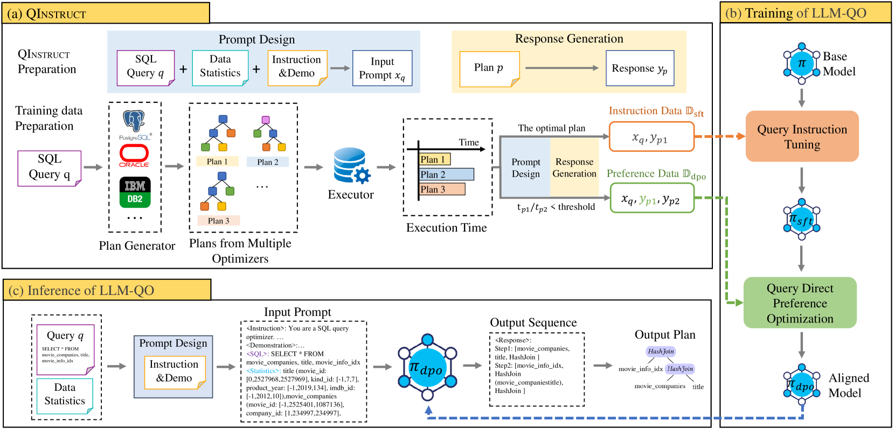
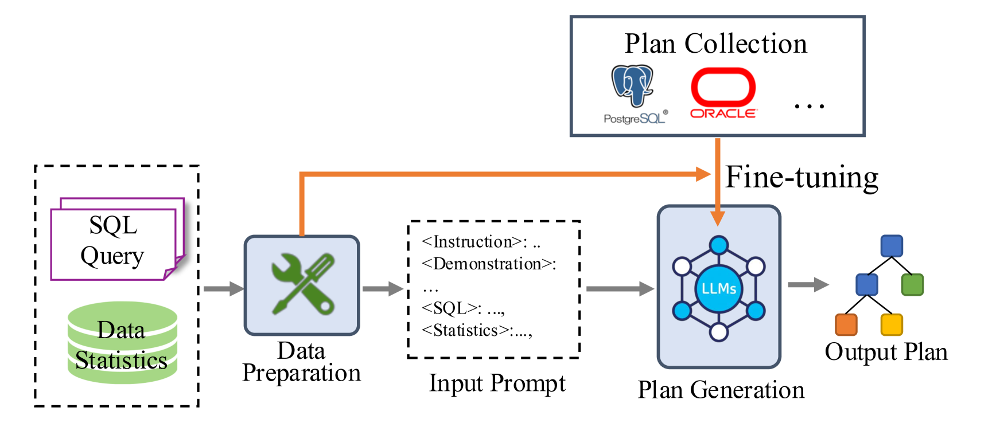
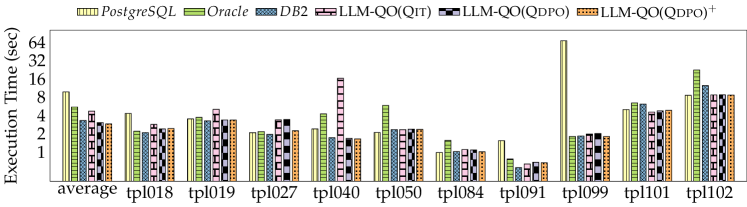
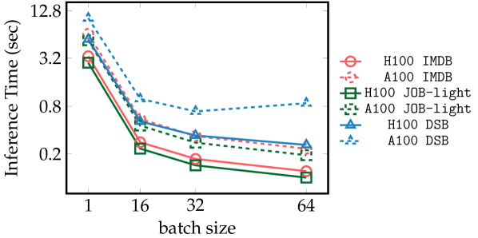
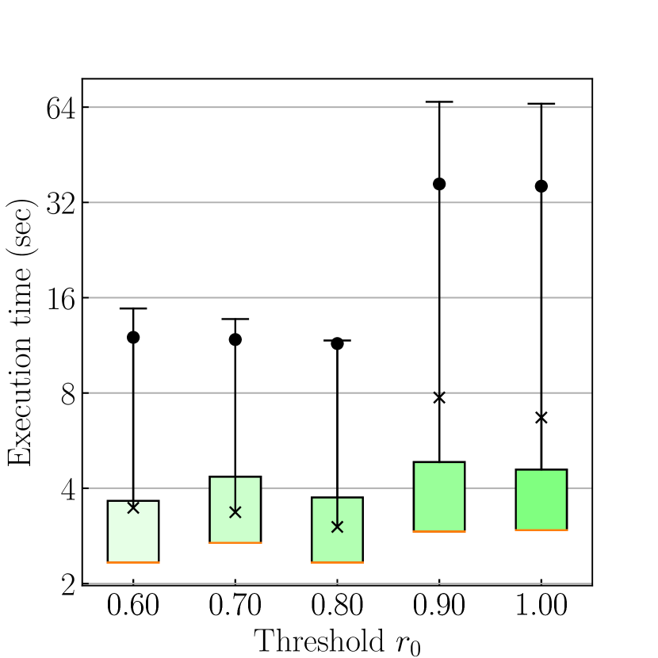
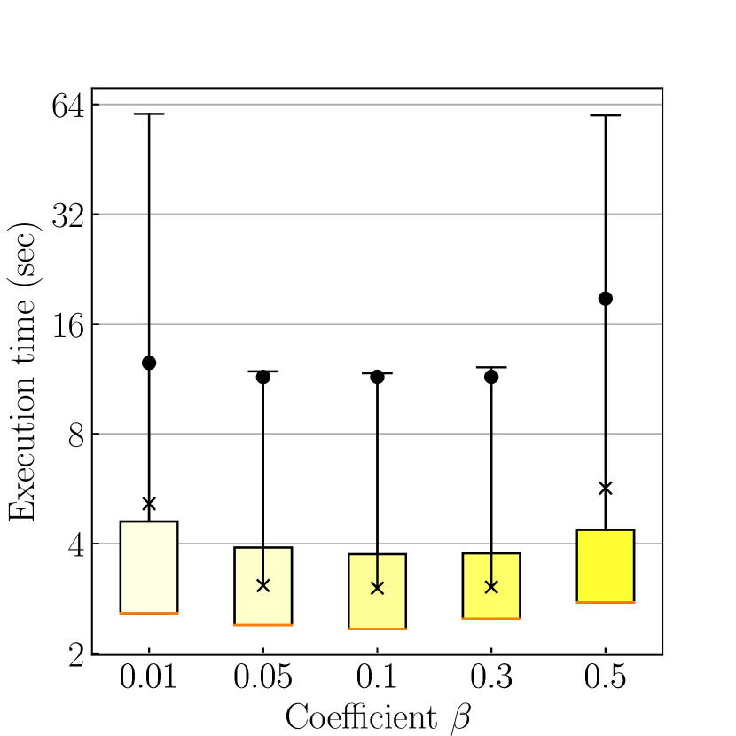
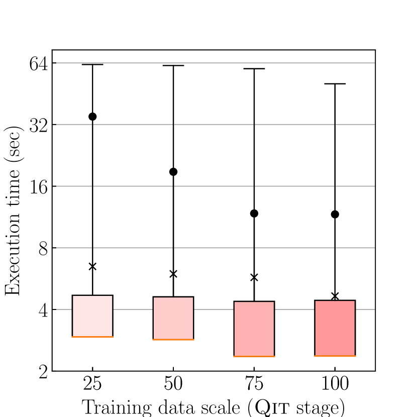
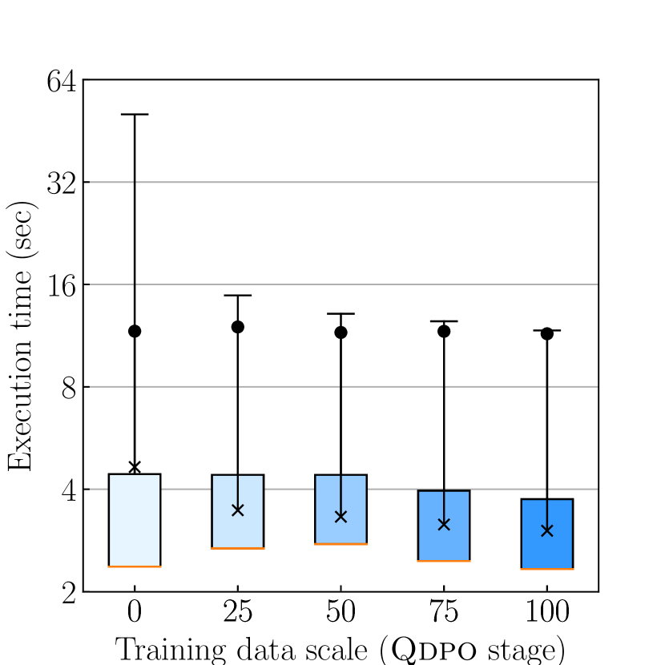

让大模型直接"写"出执行计划 — 把查询优化从"枚举搜索"变成"自回归生成"
📄 PVLDB Vol.17 No.10 / VLDB 2024 | arXiv: 2502.05562 | GitHub: Candice1995/LLM-QO
传统数据库查询优化器（如 PostgreSQL）依赖启发式规则 + 成本模型，通过动态规划在巨大的执行计划空间中"枚举—估算—选择最优"。LLM-QO 提出一个根本性改造：把查询优化重新建模为自回归生成任务——给 LLM 输入"SQL 查询 + schema + 统计信息"，让它直接吐出一个可执行计划，跳过显式枚举。论文通过 QInstruct 数据配方 + 两阶段微调（Qit + Qdpo），将通用 LLaMa-3-8B 蒸馏成一个超越 PostgreSQL/Oracle/Bao/HybridQO 的查询优化器。
▲ LLM-QO 三大 Pipeline：① 数据准备生成 D_sft + D_dpo；② 两阶段训练 Qit→Qdpo；③ 推理时让 π_dpo 自回归生成执行计划

📄 论文原图 — Figure 2: LLM-QO 完整框架，包含 (a) QInstruct 与数据准备 pipeline，(b) 训练 pipeline (Qit + Qdpo)，(c) 推理 pipeline。注意右下角的"Output Sequence"展示了 Planning Path 的两步输出格式：每一步包含 [opd1, opd2, opt]。
论文提出的核心数据收集方法。从多个商用优化器（PostgreSQL/Oracle/DB2）并行收集计划，序列化为文本格式，构造两类训练数据：D_sft（每查询一个最优计划）和 D_dpo（偏好对）。
Qit 是 SFT，让 LLM "学会模仿"专家优化器输出有效计划；Qdpo 是 DPO，让 LLM "学会偏好"——在两个候选计划之间能识别哪个执行时间更短。两阶段缺一不可。
每个 plan 用两种文本表示：Planning Path（n-1 步后序遍历）激发 CoT 多步推理；Bracket Sequence（嵌套括号）作为最终答案。这是 DPO 阶段细粒度区分计划质量的关键设计。
查询优化是数据库管理系统中最古老也最核心的问题之一。给定一条 SQL（如三表 join），优化器需要在指数级增长的执行计划空间中找到一个执行时间最短的物理计划——决定 join 顺序（先 A⋈B 还是先 B⋈C）、决定每个 join 的物理算子（HashJoin / NestLoopJoin / MergeJoin）、决定每张表的访问方法（顺序扫描 / 索引扫描）。这个空间随表数量呈阶乘增长，10 张表的 join 就有数十亿种可能计划。

📄 论文原图 — Figure 1: (a) LLM-QO 概览：把传统优化器的"枚举+成本估计"流程换成 LLM 的自回归生成；(b) 在 DSB 工作负载上的执行时间对比，LLM-QO 显著优于 PostgreSQL/Oracle/Bao/HybridQO 等基线。
① 成本模型不准：PostgreSQL 等优化器靠"基数估计 + 启发式公式"估算每个候选计划的代价，但基数估计众所周知地不准（误差可能 100×~1000×）。② 计划空间被人为裁剪：动态规划只能在预先枚举的有限候选集中选最优，真正的最优计划可能根本不在候选集里。③ 无法跨工作负载学习：传统优化器对每条查询都"重新算一遍"，不会从"过去优化过的相似查询"中学到经验。
与此同时，大语言模型（LLM）在 复杂规划与决策任务 上展现了惊人能力——数学推理、代码生成、多步符号计算。研究者自然会问：查询优化本质上是不是也是一种"规划任务"？能不能让 LLM 直接做？论文的回答是肯定的：把"查询 + schema + stats" 输入 LLM，让它按 token 自回归生成执行计划——跳过显式枚举，跳过成本模型，直接产出最终答案。
表层动机：传统优化器用了 50 年的"枚举 + 成本估计"范式可能存在天花板，需要试一种新范式。
中层动机：LLM 已在数学/代码/规划任务上表现优异，查询优化的"决策树搜索本质"和这些任务相似。
深层动机：能否把"过去千万次查询优化的经验"压缩进一个可推理、可泛化、可适应的模型里？这就是 LLM 作为"优化经验载体"的潜力。
论文给出的回答是："是的，但还需要研究努力"。LLM-QO 在 IMDB / JOB-light / DSB 三个 OLAP 工作负载上一致地超越了 PostgreSQL、Oracle、Bao、HybridQO，但同时也暴露了三个开放问题：泛化性（能否在未见过的 schema 上仍有效？）、效率（LLM 推理的延迟能否压到毫秒级？）、适应性（数据库 schema 变了能否快速适配？）。这些是论文留给社区的三个研究方向。
LLM-QO 是数据库 + 机器学习 + LLM 三个领域的交叉工作。理解它需要先弄清楚几个关键概念。这些术语并非通用基础（如 Transformer），而是论文涉及的特定领域知识，对它们的理解直接影响对 LLM-QO 设计动机的把握。
给定 SQL "SELECT * FROM A, B, C WHERE A.x = B.x AND B.y = C.y"，物理执行计划要决定：(1) join 顺序—— 先 A⋈B 再 ⋈C ？还是先 B⋈C 再 ⋈A ？(2) 每个 join 的物理算子—— HashJoin（建哈希表）/ NestLoopJoin（嵌套循环）/ MergeJoin（排序后归并）？(3) 每张表的访问方式—— 顺序扫描 SeqScan / 索引扫描 IndexScan ？三者组合后的可能计划数随表数量阶乘增长，对 10 表 join 是 ~ 10! × 3⁹ ≈ 10¹⁰ 量级——这就是"指数级计划空间"。
SPJ = Selection + Projection + Join（选择 + 投影 + 连接）。这是数据库中最常见的查询类型——挑出符合条件的行（Selection 即 WHERE）、投影出某些列（SELECT 列）、连接多张表（FROM 多表）。论文当前阶段只处理 SPJ 查询，每个 join 条件连接两张表。不支持聚合（GROUP BY）、嵌套子查询、窗口函数等更复杂的查询结构。这是工程上的简化，但已覆盖了 OLAP 大部分场景。
2018 年起出现了用机器学习改造查询优化的一系列工作，分两类：
① De novo（从零学习）：完全替换传统动态规划。Neo（VLDB'19）用 Tree Convolution 估计延迟 + best-first search 自底向上构建计划；Balsa（SIGMOD'22）改进了 Neo，用纯逻辑成本模型 bootstrap，跳过专家优化器。
② Steered（引导式）：让 ML 模型给传统优化器"加 hint"，引导它选好的候选。Bao（SIGMOD'21）用多臂老虎机算法选择查询级 hint（如"禁止 NestLoopJoin"），训一个 Tree Convolution 当价值函数；HybridQO（VLDB'22）把 hint 解释为前缀树（部分 join 顺序），引导预测最终顺序；Lero（VLDB'23）用 learning-to-rank 决定计划偏好。
LLM-QO 的关键差别：以上方法都还需要传统优化器作为底座（生成候选/估算成本），而 LLM-QO 完全跳过了候选枚举——LLM 直接生成最终计划。这是方法论上的根本不同。
这是 LLM 训练领域的关键术语，论文使用了其中两种：
• SFT (Supervised Fine-Tuning，监督微调)：给 LLM "标准答案"对 (x, y)，让它学会模仿 y。损失函数是负对数似然 L = -log π(y|x)。Qit 阶段就是 SFT，让 LLM "模仿专家优化器"产出最优计划。
• RLHF (Reinforcement Learning from Human Feedback)：用人类偏好反馈训练奖励模型，再用 PPO 等 RL 算法优化 LLM。复杂、不稳定。
• DPO (Direct Preference Optimization)：2023 年 Stanford 的工作（NeurIPS'23）。跳过 RLHF 的奖励模型 + RL 复杂流程，直接给 LLM 偏好对 (x, y_w, y_l)，用一个简单的对比损失训练。论文 Qdpo 就是 DPO，让 LLM 在两个候选计划中识别"哪个执行更快"。
LLaMa-3-8B 有 80 亿参数，全量微调需要数百 GB 显存。LoRA (Low-Rank Adaptation) 只在 attention 层旁边训练两个低秩矩阵（如 r=8 的 8×8000 矩阵），冻结原模型参数——可训练参数缩到 0.5% 以下。Unsloth 是 LoRA 的高度优化实现，在单张 A100 上训 LLaMa-3-8B 只需几小时。论文用 LoRA + Unsloth 让两阶段训练在单 A100 80GB 上跑完成为可能。
这两个是 LLM prompt 工程的关键技巧，不是论文创新点，但论文借用了它们的思路：
• CoT：在 prompt 里加一句 "Let's think step by step"，让 LLM 把思考过程显式拆成中间步骤。在数学/逻辑任务上能大幅提升准确率。论文的 Planning Path（n-1 步后序遍历）就是为 CoT 服务的—— 让 LLM 一步步"想清楚"先 join 谁、再 join 谁。
• ICL：在 prompt 里塞一两个"示范例子"（exemplar），让 LLM 通过例子推断任务模式。论文的 Planning Demonstration 就是 ICL—— 给 LLM 看一个"类似查询的最优计划长啥样"，让它在结构上模仿。
QInstruct 是论文最重要的工程贡献之一。它回答的问题是：怎么把"查询优化"这个数据库问题，翻译成 LLM 能学习的"文本到文本"问题？核心难点在于：执行计划是树结构，schema 信息是表格结构，统计信息是键值对——这些都不是天然的文本。QInstruct 给出了完整的序列化协议，把异构信息全部"压扁"成 LLM 能消化的 prompt。

📄 论文原图 — Figure 4: QInstruct 的完整 prompt 格式。包含五大组件：<Instruction>（角色 + 任务说明）、<Demonstration>（示范例子）、<SQL>（目标查询）、<Statistics>（统计信息）、<Response>（输出计划）。
论文将 prompt 拆解为 5 个不可或缺的组件，每个组件解决一个特定问题：
最简单的部分——把目标 SQL 直接放入 prompt。注意论文限定SPJ 查询，即 SELECT-PROJECT-JOIN，不含 GROUP BY/嵌套子查询等复杂结构。
示例：SELECT * FROM movie_companies, title, movie_info_idx WHERE ...
告诉 LLM "你是一个 SQL 查询优化器，请输出最优计划"。包含角色设定（DBA expert）、支持的算子集合（HashJoin/NestLoopJoin/MergeJoin/SeqScan）、输出格式约束。这部分非常关键——通用 LLM 没有"我是查询优化器"的先验，必须显式告诉它。
关键句式："You are a SQL query optimizer. Generate an execution plan using only HashJoin, NestLoopJoin, MergeJoin, SeqScan operators. Think step by step."
这是查询优化能否做对的关键。优化器选择 join 顺序时严重依赖每张表的大小、每列的基数（distinct count）、值的范围等统计信息。论文用一种紧凑格式表达：
# Statistics 格式：表名 (列名: [min, max, distinct_count]) title (movie_id: [0, 2527968, 2527969], kind_id: [-1, 7, 7], production_year: [-1, 2019, 134], imdb_id: [-1, 2012, 10]) movie_companies (movie_id: [-1, 2525401, 1087136], company_id: [1, 234997, 234997], ...)
为什么这样设计？每列只用 3 个数字 [min, max, ndv]，而不是完整直方图（histogram）。原因：① token 预算紧张，完整直方图可能爆炸 prompt；② 三元组已能区分大小表—— ndv 接近行数 ⇒ 唯一键，可建哈希；ndv 极小 ⇒ 选择性低。
训练数据的来源。论文不是让 LLM "凭空想出"最优计划，而是让它蒸馏多个商用优化器的智慧——同一条 SQL 让 PostgreSQL、Oracle（甚至 DB2）各自生成一个计划，实测每个计划的执行时间，挑最快的作为"标准答案" y_p*。
关键洞察：不同优化器擅长不同查询。Oracle 在某些 schema 上更优，PostgreSQL 在另一些上更优——LLM-QO 通过实际执行客观挑选，等于自动获得"多优化器集成"的能力。
这是论文为缓解 LLM "幻觉"专门设计的组件。LLM 拿到陌生表名 / 列名时容易生成无效计划（引用不存在的列、用错算子）。论文在 prompt 里塞一个同模板查询的范例——"看，类似的查询长这样，对应计划长这样"，让 LLM 在结构上模仿。
关键设计：选择 demonstration 时，必须和目标查询用相同的表集合 + 相同的 join 条件结构（同 query template）。Demo 的计划不需要是最优的——LLM 只是从中学"哪些表会出现、列名怎么写"，结构提示作用足矣。
① Query 是问题；② Instruction 是任务规则；③ Auxiliary Info 是决策依据（让 LLM 知道哪些表大、哪些列适合做哈希键）；④ High-quality Plans 是训练监督信号；⑤ Demonstration 是结构性提示（防止幻觉）。缺一不可——消融实验显示去掉 statistics 或 demonstration，性能都会显著下降（见第 6 节）。
本节深入两个最具创新性的设计：双重 Plan 文本表示（Planning Path + Bracket Sequence）和两阶段训练算法（Qit + Qdpo）。理解这两个设计是理解 LLM-QO 全部价值的钥匙。
一个执行计划本质是一棵二叉树（每个 join 节点有两个子节点）。把树序列化成文本有多种方式，论文选择了"两种并存"的设计，每种解决不同问题。
▲ Plan 的三种视角：物理计划树（数据库内部表示）、Planning Path（n-1 步序列，激发 CoT）、Bracket Sequence（嵌套括号，紧凑答案）。论文采用"先 Path 再 Bracket"的双重输出
这是论文最精妙的设计动机。如果只用 Bracket Sequence，DPO 看到的"偏好对" (y_w, y_l) 可能只是括号嵌套结构的微小差异——损失信号太稀疏，DPO 难以学到有意义的偏好。
引入 Planning Path 后，每一步都成为可对比的细粒度单元——好计划在 Step1 选 HashJoin，差计划在 Step1 选 NestLoopJoin，DPO 能精确定位"是哪一步的决策让两个计划性能差距大"。消融实验验证：去掉 Planning Path 后，Qit 阶段还能凑合，但 Qdpo 阶段性能显著下降——这正是 Planning Path 在 DPO 阶段不可替代的证据。
这一阶段是监督微调（SFT）。给 LLM 大量 (x_q, y_p*) 对，其中 y_p* 是多优化器中执行最快的那个计划。损失函数是经典的负对数似然：
直觉理解：让模型 π_θ 在看到输入 x 时，输出 y 的概率尽可能高——本质是"模仿专家"。Qit 阶段的目标不是让模型超越专家，而是先具备"生成有效计划"的基础能力。论文实验显示，仅经过 Qit 后，模型已经能在 IMDB/JOB-light 上略微超越 PostgreSQL，但提升有限。
这一阶段是偏好对齐。Qit 后的模型 π_sft 虽然能生成有效计划，但还没学会"区分一个好计划和一个稍差的计划"。Qdpo 用 DPO 损失解决这个问题：
直觉理解：u(x, y_w, y_l) 是"奖励差异"——衡量在新模型 π_dpo 下，"赢家计划 y_w 比输家计划 y_l 多被偏好多少"（相对于参考模型 π_sft）。损失 -log σ(u) 通过 sigmoid 函数把这个差异映射到 [0,1]，要求模型显著拉开两者的概率差距。
关键超参 β = 0.1：控制 π_dpo 相对于 π_sft 的偏离程度。β 太大 → 偏离太远，可能丢失 Qit 已学到的有效性；β 太小 → 偏好信号太弱，学不到东西。论文消融显示 β=0.1 是甜蜜点。
① 跳过 Qit 直接 Qdpo：基础 LLM 连"有效计划"都生成不了，DPO 的偏好对都是"两个无效计划"，毫无意义。
② 仅 Qit 不 Qdpo：模型只学了"模仿单个最优"，没学过"对比"——遇到边界情况（如新 schema）易选次优。
这种"先模仿后偏好"的两阶段范式实际上是 InstructGPT/RLHF 流程的精简版（去掉了奖励模型 + RL），用 DPO 的简洁性做了同样的事。
# Algorithm 1: Preference Data Generation Input: query q, optimizers {O_1, ..., O_k}, threshold r_0=0.95 Output: instruction sample (x_q, y_p*), preference pairs P_q 1. plans ← [] 2. for O_i in optimizers: 3. p_i ← O_i.generate_plan(q) # 多优化器各自生成计划 4. t_i ← execute(p_i) # 实测执行时间 5. plans.append((p_i, t_i)) 6. p*, t* ← argmin(plans, key=t) # 找最快计划作为 y_w 7. D_sft.add((x_q, y_p*)) # SFT 训练数据 8. P_q ← [] 9. for (p_i, t_i) in plans: 10. if t* / t_i < r_0: # 比最快慢"足够多"才作为 loser 11. P_q.append((x_q, y_p*, y_p_i)) # 偏好对：好计划 vs 差计划 12. D_dpo.extend(P_q)
r₀ 控制了"差异度多大才算偏好对"。r₀=1.0（取所有非最优）→ y_w 和 y_l 可能性能几乎一样，DPO 学不到偏好；r₀=0.6（要求 y_l 比 y_w 慢至少 40%）→ 偏好对数量太少，训练不充分。论文实验显示 r₀=0.80 是最优值—— 既保证偏好对数量充足，又保证质量上有显著差异。
本节用两张 SVG 流程图分别解析离线训练数据流（数据如何从 SQL 工作负载流到训练好的 π_dpo）和在线推理数据流（一条新查询如何在毫秒级流过 π_dpo 得到执行计划）。
▲ 训练数据流：工作负载 → 多优化器并行执行 → 实测时间 → 算法1 筛选 → QInstruct 序列化 → 两阶段微调 → 部署 π_dpo
▲ 推理数据流：用户 SQL → 提取 schema/stats → 检索 demo → 组装 prompt → π_dpo 生成 → 解析 → pg_hint_plan 注入 → PostgreSQL 执行
LLM 自回归生成不是免费午餐——单次推理在 A100 上需要约 1~2 秒。这意味着 LLM-QO 当前只对长执行查询有净收益（如 DSB 中执行时间数十秒的复杂 join），对小查询（毫秒级响应）反而会拖慢整体延迟。这正是论文留下的"效率"开放问题——未来需要小模型蒸馏、推理加速、缓存等手段把 LLM 推理压缩到 100ms 以内。
本节深入讲解几个论文中容易被忽略但非常关键的技术细节，理解它们能更好把握论文的工程严谨性。
论文有一个很反直觉的设计：Planning Demonstration 中的 plan 不必是最优的。直觉上你可能会想——"既然要给 LLM 看示范，应该给个最完美的吧？"但论文实验显示：LLM 看示范时，主要关注的是结构（哪些表、哪些列、操作符的写法）而非内容（具体的 join 顺序）。给一个"长得对"的范例就足够防止幻觉，不需要"最优"。这反而简化了 demo 的检索——只要找到"同模板"查询的任意 plan 即可，无需额外排序。
论文使用 LoRA 进行参数高效微调，关键超参：
LoRA Configuration: rank r = 16 # 低秩矩阵的秩 lora_alpha = 32 # 缩放因子（通常 = 2r） target_modules = [q_proj, k_proj, v_proj, o_proj, gate_proj, up_proj, down_proj] dropout = 0.0 # 不丢弃 Trainable params: ~42M / 总 8B ≈ 0.5%
关键观察：LoRA 同时作用在 attention（q/k/v/o）和 MLP（gate/up/down）所有线性层上，最大化适配能力。仅训 0.5% 参数，但能完整改造模型行为，得益于 LoRA 在 Transformer 全部线性层上的"全覆盖"。
论文 Algorithm 1 的第 10 行有个细节：偏好对总是 (y_p*, y_p_i)，即"最优 vs 次优"，而不是任意两个 plan 配对。这意味着每条查询的 D_dpo 中，y_w 永远是同一个 plan（实测最快的那个），y_l 是被 r₀ 阈值筛过的若干"明显较差"的 plan。这种"非对称"设计比"两两配对"更高效—— DPO 模型只需学会"识别最优"，而非"对所有 plan 排序"，任务被简化了。
对比常见 LLM 微调动辄上万步，LLM-QO 的训练步数显得"少得离谱"。原因：
① LoRA 收敛快：参数量小，损失曲线很快趋于平稳；
② 任务结构强：查询优化是"模板化"任务（输入 SQL → 输出 plan 树），不像创意写作那样开放；
③ 过拟合风险：训练步数太多反而会让 π_dpo 过度偏离 π_sft，导致输出无效计划（消融实验中 Qdpo 在完全 OOD 模板上易产生无效计划，正是这个原因）。
这个简洁的训练预算也带来一个工程优势：整个两阶段训练在单 A100 上几小时内完成，对实际部署友好。
论文限定输出只用三种 join 算子，每种的物理特性影响选择：
| 算子 | 原理 | 适用场景 | 大小敏感性 |
|---|---|---|---|
| HashJoin | 对内表建哈希表，外表流式查找 | 等值连接、内表能塞进内存 | 内表越小越好 |
| NestLoopJoin | 外表每行扫一遍内表 | 极小内表（如 LIMIT 1）、不等值连接 | 外表 × 内表 = 总成本 |
| MergeJoin | 两表先按 join 键排序，再归并 | 两表已排序、需要排序输出 | 排序开销主导 |
LLM-QO 通过 Statistics（每列 [min, max, ndv]）隐式判断这些条件——大表 + 小表 ⇒ HashJoin；都很小 ⇒ NestLoopJoin。这种判断完全是模型从数据中学到的，没有显式规则，这正是 LLM 作为优化器的有趣之处。
论文的实验非常扎实，覆盖三个工作负载、五种基线、三类 OOD 测试和详尽的消融。本节挑选最关键的结果展开。
| 方法 | IMDB (Mean) | JOB-light (Mean) | DSB (Mean) | DSB 95th | DSB 99th |
|---|---|---|---|---|---|
| PostgreSQL (基线) | 1.00× (基准) | 1.00× (基准) | 1.00× = 9.64s | 43.91s | 136.27s |
| Oracle | 0.97× | 0.99× | 0.78× | 33.5s | 121s |
| Bao（学习型） | 0.94× | 0.96× | 0.32× | 11.6s | 12.0s |
| HybridQO（学习型） | 0.95× | 0.96× | 0.55× | 22.0s | 74.0s |
| LLM-QO (Qit) | 0.957× | 0.979× | 0.482× | 11.60s | 50.60s |
| LLM-QO (Qdpo) | 0.914× ⚡ | 0.944× ⚡ | 0.313× ⚡ | 11.46s ⚡ | 11.72s ⚡ |
① LLM-QO (Qdpo) 全面超越所有基线—— 平均执行时间降到 PostgreSQL 的 31.3%（即加速 3.2×）；
② 长尾分位数收益更大—— 99th 分位从 PostgreSQL 的 136.27s 暴降到 11.72s，降低 91%，意味着最坏情况查询被极大缓解；
③ Qit → Qdpo 的差距不可忽视—— DSB 上 Qit 的 mean 是 0.482×，Qdpo 是 0.313×，DPO 阶段贡献了约 35% 的额外提升。
| 消融项 | 变体 | Mean | 95th | 99th | 无效计划 |
|---|---|---|---|---|---|
| 输入特征 | w/o statistics (Qdpo) | 4.58 | 11.63 | 50.03 | — |
| w/o demonstration (Qdpo) | 5.09 | 11.59 | 37.37 | 1 | |
| 输出格式 | w/o planning path (Qdpo) | 4.24 | 11.60 | 47.59 | — |
| Backbone | CodeLLaMA-7B (Qdpo) | 3.12 | 11.61 | 11.87 | — |
| LLaMA2-7B (Qdpo) | 3.07 | 11.53 | 11.69 | — | |
| Mistral-7B (Qdpo) | 5.71 | 18.92 | 59.69 | 34 ⚠️ | |
| — | LLM-QO (Qdpo) 完整版 = LLaMa-3-8B | 3.02 | 11.46 | 11.72 | — |
① Statistics 不可或缺：去掉后 mean 从 3.02 涨到 4.58（变慢 52%）—— 没有统计信息，LLM 根本无法判断表的大小，只能瞎猜 join 顺序。
② Demonstration 主要防幻觉：去掉后产生了 1 个无效计划（在完整版中是 0），但整体性能下降不如去 statistics 严重—— 说明 demo 是"质量保险"而非"性能驱动"。
③ Planning Path 是 DPO 阶段的关键：去掉后 99th 从 11.72 涨到 47.59（变慢 4×）—— 没有细粒度推理痕迹，DPO 学不到偏好。
④ Backbone 选择有显著影响：Mistral-7B 产生 34 个无效计划，说明 Mistral 的指令跟随能力对结构化输出任务不够稳定。LLaMa-3-8B 是甜蜜点。
这个实验验证了 Qdpo 阶段的"可适应性"——能否通过新的偏好数据让模型适应新优化器的偏好。论文加入 DB2 优化器作为新的偏好源，构造 D⁺_dpo，得到 LLM-QO (Qdpo)+。

📄 论文原图 — Figure 5: 在 DSB 10 个模板上的偏好适应实验。注意 tpl027：DB2 显著优于 PostgreSQL/Oracle，LLM-QO (Qdpo)+ 在引入 DB2 偏好后明显提升；tpl091：DB2 也较优但 Qdpo+ 提升不明显，原因是 Qit 阶段已被 Oracle 主导。
这个实验是论文最有意思的发现之一：LLM-QO 可以通过更新 D_dpo 来"切换偏好源"，类似于"更新偏好引导"。这开辟了一个新可能——当数据库迁移到新硬件、新版本时，无需重新训练 Qit 阶段，只需用新硬件下的偏好数据重做 Qdpo 即可适配。这远比传统优化器的"重新调参 + 重测成本模型"方便。

📄 论文原图 — Fig 6(c): 阈值 r₀ 的影响。0.6~0.8 之间性能最优，0.9/1.0 显著退化（偏好对质量稀释）。最佳值 r₀=0.80。

📄 论文原图 — Fig 6(d): DPO 超参 β 的影响。β 太大会让 π_dpo 过度偏离 π_sft 损失有效性，太小则学不到偏好。0.1 是甜蜜点。

📄 论文原图 — Fig 6(a): Qit 阶段训练数据规模影响。不同于 NLP 任务的高数据效率，结构化输出任务需要更多数据，LLM-QO 在 100% 数据时才达到峰值。

📄 论文原图 — Fig 6(b): Qdpo 阶段对数据规模不敏感——仅 25% 偏好数据已能达到接近完整数据的性能，体现 DPO 的高数据效率。
① Qit 阶段需要"满数据"：因为它要学的是"如何为每种查询模板生成正确的 plan 结构"，需要见过大量样本才能覆盖所有模板。
② Qdpo 阶段对数据极敏感：因为它只需学"区分相近 plan 的优劣"，少量高质量偏好对就够了。
这个发现的实践含义：采集数据时，应该花大力气保证 D_sft 的多样性，而 D_dpo 只需精心标注少量高质量偏好对即可。
这是 50 年来查询优化的根本性范式变化。传统优化器只能在"已枚举的候选集"中选最优，LLM-QO 直接生成不在任何候选集中的全新计划。突破了"动态规划 + 成本模型"框架的天花板。
Planning Path 激发 CoT 推理，Bracket Sequence 提供紧凑答案——各司其职。更深层动机是为 DPO 创造细粒度对比单元，这是双重表示在 Qdpo 阶段不可替代的根本原因。
通过实测多个商用优化器的执行时间，自动挑最优作 y_w，相当于"免费"获得集成（ensemble）的能力。无需训多个模型，无需复杂投票机制。
r₀ 控制偏好对的"难度"（差距大小），β 控制 DPO 偏离 SFT 的"程度"。两者协同精准调节学习强度，避免过拟合或欠拟合。
仅 0.5% 参数 + 数百步即收敛，整个 pipeline 在单 A100 上几小时跑完。学术原型直接可工业部署，没有"PaperOnly"的距离感。
当前阶段不支持聚合（GROUP BY）、嵌套子查询、窗口函数等复杂结构。这些查询在 OLAP 中也很常见，论文留作未来工作。Plan 树结构会更复杂，对 LLM 的输出长度和准确性都是挑战。
论文假设 schema 不变、统计信息相对稳定。动态场景（如 BULK INSERT 改变行数分布、新增列等）下，Statistics 会偏移，模型可能输出过时计划。需要在线学习或定期重训机制。
A100 上 LLM 推理 1~2 秒，对短查询（<100ms 期望响应）反而拖慢。需要小模型蒸馏、推理缓存、speculative decoding 等技术压低延迟。这是论文留下的"效率"开放问题。
实验显示在完全未见的查询模板上，LLM-QO (Qdpo) 易产生无效计划。这反映 DPO 阶段的"激进偏好学习"会损害对新模板的鲁棒性。论文建议"平滑 Qit→Qdpo 过渡"，但具体方法未提供。
所有实验都在 PostgreSQL 上完成。同样的模型能否迁移到 MySQL/Oracle？不同 DBMS 的统计信息格式、算子集合、执行引擎都不同，LLM-QO 是否需要为每个 DBMS 单独训练，这是论文未回答的实践问题。
需要在多个商用优化器上各自执行所有训练查询，每条查询要实际跑 k 次（k = 优化器数量）。对于大表 + 复杂 join，单次执行可能需数十秒——总训练数据准备时间随工作负载规模线性增长。
论文已开源代码到 GitHub，本节给出从环境准备到训练 + 推理的完整实战指南。
GitHub 仓库：Candice1995/LLM-QO
# 1. 克隆仓库 git clone https://github.com/Candice1995/LLM-QO.git cd LLM-QO # 2. 创建 Python 环境 conda create -n llmqo python=3.10 conda activate llmqo # 3. 安装依赖（核心：unsloth + PyTorch + 数据库连接器） pip install unsloth # LoRA 高效训练框架 pip install transformers pip install psycopg2-binary # PostgreSQL 连接器 pip install datasets pip install peft trl # LoRA 和 DPO 训练库 # 4. 安装 PostgreSQL（v12+）和 pg_hint_plan 扩展 sudo apt install postgresql postgresql-contrib cd /tmp && git clone https://github.com/ossc-db/pg_hint_plan.git cd pg_hint_plan && make USE_PGXS=1 && sudo make USE_PGXS=1 install
LLM-QO/ ├── data/ # 数据集和预处理脚本 │ ├── imdb/ # IMDB schema + 查询 │ ├── job/ # JOB-light 70 模板 │ └── dsb/ # DSB 10 SPJ 模板 ├── qinstruct/ # QInstruct 数据生成 │ ├── collect_plans.py # 多优化器并行收集 plan │ ├── execute_and_time.py # 实测执行时间 │ ├── build_dsft.py # 构造 D_sft │ └── build_ddpo.py # 构造 D_dpo（含阈值 r₀ 过滤） ├── training/ │ ├── qit_train.py # Qit 阶段（SFT） │ └── qdpo_train.py # Qdpo 阶段（DPO） ├── inference/ │ ├── generate_plan.py # π_dpo 生成 plan │ ├── parse_bracket.py # 括号序列 → AST │ └── apply_hint.py # 转为 pg_hint_plan 格式 ├── eval/ # 评估脚本 └── configs/ # 训练超参配置
# ==================== Step 1: 收集训练数据 ==================== python qinstruct/collect_plans.py \ --workload imdb \ --optimizers postgresql,oracle \ --output data/imdb/plans.json python qinstruct/execute_and_time.py \ --plans data/imdb/plans.json \ --output data/imdb/timed_plans.json python qinstruct/build_dsft.py \ --input data/imdb/timed_plans.json \ --output data/imdb/dsft.json python qinstruct/build_ddpo.py \ --input data/imdb/timed_plans.json \ --threshold 0.95 \ --output data/imdb/ddpo.json # ==================== Step 2: Qit 训练 ==================== python training/qit_train.py \ --base_model "meta-llama/Meta-Llama-3-8B-Instruct" \ --dataset data/imdb/dsft.json \ --lora_r 16 --lora_alpha 32 \ --lr 2e-4 --steps 600 \ --output checkpoints/qit_imdb # ==================== Step 3: Qdpo 训练 ==================== python training/qdpo_train.py \ --base_model checkpoints/qit_imdb \ --dataset data/imdb/ddpo.json \ --beta 0.1 \ --lr 5e-6 --steps 200 \ --output checkpoints/qdpo_imdb # ==================== Step 4: 推理 ==================== python inference/generate_plan.py \ --model checkpoints/qdpo_imdb \ --query "SELECT * FROM movie_companies, title, movie_info_idx WHERE ..." \ --schema data/imdb/schema.json \ --stats data/imdb/stats.json \ --demo data/imdb/demos/q1.json # 输出: NestLoopJoin(HashJoin(movie_companies, title), movie_info_idx) # ==================== Step 5: 应用到 PostgreSQL ==================== python inference/apply_hint.py \ --plan "NestLoopJoin(HashJoin(movie_companies, title), movie_info_idx)" \ --query "SELECT * FROM movie_companies, title, movie_info_idx WHERE ..." \ --execute # 直接在 PostgreSQL 上执行
| 超参 | 默认值 | 说明 | 调优建议 |
|---|---|---|---|
| --base_model | LLaMa-3-8B-Instruct | 骨干模型 | 避免 Mistral（无效计划多） |
| --lora_r | 16 | LoRA 秩 | 大模型可降到 8 节省显存 |
| --lora_alpha | 32 | LoRA 缩放 | 保持 = 2 × lora_r |
| --lr (Qit) | 2e-4 | SFT 学习率 | 小数据集可降到 5e-5 |
| --lr (Qdpo) | 5e-6 | DPO 学习率 | 必须远小于 Qit |
| --steps (Qit) | 600 | SFT 步数 | 看 loss 曲线，平稳即可 |
| --steps (Qdpo) | 200 | DPO 步数 | 过多易损失 Qit 的有效性 |
| --beta | 0.1 | DPO 偏离系数 | 不要超过 0.3 |
| --threshold (r₀) | 0.95 | 偏好对筛选阈值 | DSB 用 0.8 更好 |
| --max_length | 2048 | token 长度 | 大表多列时调到 4096 |
A100 80GB 训练 LLaMa-3-8B + LoRA 应该没问题。如显存紧张：① 降低 batch_size（默认 8 → 4）；② lora_r 从 16 降到 8；③ 启用 gradient checkpointing；④ 用 4-bit 量化（unsloth 支持）。
如果推理时频繁产生无效计划（引用不存在的列名等）：① 检查 demonstration 是否选对了同模板查询；② 增加 Qit 训练步数（数据多样性可能不足）；③ 降低 Qdpo 步数（避免过度偏离 SFT）。
LLM 自回归本身就慢。可尝试：① 用 vLLM 加速推理（KV cache + continuous batching）；② 启用 speculative decoding；③ 减小 max_length；④ 部署时用 4-bit 量化（精度损失小）。
以下为论文 Can Large Language Models Be Query Optimizer for Relational Databases?（LLM-QO，PVLDB Vol.17 No.10，arXiv:2502.05562）正文的中文翻译，遵循原文结构与专业术语，并在关键位置嵌入论文原图以帮助理解。
《大型语言模型能否成为关系数据库的查询优化器？》（Can Large Language Models Be Query Optimizer for Relational Databases?），作者：谭杰、赵康飞、李瑞、于旭杰（香港中文大学），朴成智（香港浸会大学），程虹、孟恒丽（香港中文大学），赵德利、荣宇（阿里巴巴达摩院、湖畔实验室）。
查询优化的目标是在 DBMS 中呈指数级增长的计划空间里，为给定查询找到最优执行计划，这是一个复杂的规划与决策问题。传统优化器严重依赖由各种启发式与经验调参构建的成本模型，可能生成次优计划。近期大语言模型（LLM）在算术、编程等复杂规划与决策任务上展现出潜力。本文尝试探索 LLM 处理查询优化的潜力，并提出一个名为 LLM-QO 的、基于 PostgreSQL 执行引擎的试探性 LLM 查询优化器。在 LLM-QO 中，我们将查询优化建模为自回归生成任务，直接生成执行计划而无需显式枚举。为探究 LLM-QO 的关键输入，我们设计了一个定制的数据配方 QInstruct，从多种优化器收集训练数据，并将数据库的元数据、查询及其对应计划序列化为文本格式。基于 QInstruct，我们实现了一个两阶段微调流水线——查询指令微调（Query Instruction Tuning, Qit）与查询直接偏好优化（Query Direct Preference Optimization, Qdpo）——赋予通用 LLM 处理查询优化的能力。实验中，LLM-QO 能生成有效且高质量的计划，并在三个查询负载上持续优于传统与学习型优化器。我们的发现验证了 LLM 可以被蒸馏为查询优化器，其中泛化性、效率与自适应能力值得进一步研究。
查询优化器是 DBMS 的基础组件，研究已持续数十年。通用优化器遵循"计划枚举与搜索"范式：从指数级增长的计划空间枚举候选计划，并用成本模型寻找最小成本计划。成本模型依赖各种经年经验校准的启发式、假设与超参数。近期研究用机器学习（如强化学习）替代动态规划来生成计划，或把学习策略注入通用优化器以引导候选计划选择。这种范式在计划空间探索与执行效率间做了较好权衡，因为用成本模型计算所有计划成本在计算上不可行。然而，其性能上界受初始枚举阶段生成的候选计划限制，可能因探索不足而错过更优计划。
我们见证了 LLM 在规划与决策问题上的巨大成功。经海量数据预训练的 LLM 展现出解决特定任务的涌现能力；经任务数据微调后，能接受上下文信息并进行严谨逻辑推理（如数学、编程）。数据库领域也已开始用 LLM 做参数调优、查询重写等。受此启发，值得从全新视角审视查询优化：是否可以不经显式枚举，而由 LLM 直接生成执行计划？LLM 在海量数据上预训练获得的推理能力，或可促进对计划空间的全面探索，生成新颖高效的计划。
尽管前景诱人，让 LLM 充当查询优化器面临多重交织的挑战。查询优化需从"计划枚举搜索"范式转向"自回归生成"范式，这对通用 LLM 是全新任务——它们不了解数据库实例信息，也不懂算子类型、算法与复杂度等优化领域知识。因此核心问题是如何让 LLM 理解查询规划任务并为输入 SQL 生成有效且高效的计划。数据层面需用与查询优化相关的高质量要素（任务描述、可用算子、待处理查询、目录元数据、查询计划等）以清晰、信息丰富的"数据配方"格式喂给 LLM；算法层面需有效的训练算法来微调 LLM。为此我们提出 LLM-QO 框架，构建于 PostgreSQL 执行引擎之上，如图 1(a)。LLM-QO 旨在"蒸馏"多个现有优化器的经验，借助 LLM 的泛化与涌现能力推断更优计划。
数据上，我们设计数据准备流水线，封装为定制数据配方 QInstruct：它包含输入查询、从多优化器收集的目标计划、数据库实例元数据与一个规划示例（demonstration），并转换为文本格式，以保持必要且最小化的上下文、节省在线生成的 token。算法上，我们实现两阶段微调流水线：第一阶段查询指令微调（Qit）让 LLM 能生成有效计划；第二阶段查询直接偏好优化（Qdpo）通过区分好计划与普通计划进一步提升专业性。两阶段工作流引导 LLM 以参数化方式蒸馏并综合多个优化器的行为，从而有可能成为"总体最优"的优化器。
实验结果：相比 PostgreSQL 内置优化器，LLM-QO 在 IMDB、JOB-light、DSB 上的平均执行时间分别提升 5.6%、8.6%、68.7%。图 1(b) 给出 LLM-QO 与 PostgreSQL、Oracle 在 DSB 上按模板的对比。
基于学习的查询优化分两类：其一是从零学习（de novo），用 RL 替代动态规划生成计划（如 DQ、RTOS、JOGGER、Neo、Balsa）；其二是引导式学习（steered），把学习策略注入通用优化器以引导候选计划选择（如 Bao 用多臂老虎机搜 per-query hint、HybridQO 用前缀树解释 hint、Lero 用学习排序决定计划偏好）。LLM 提示方面，in-context learning 与 Chain-of-Thought 让 LLM 能分步推理。LLM 微调方面，指令微调赋予任务跟随能力，DPO 将奖励建模直接融入偏好学习，免去奖励模型；LoRA 以低秩近似大幅降低微调开销。LLM 用于 DBMS 已有参数调优（λ-Tune、GPTuner）、表格理解（Table-GPT）、text-to-SQL、查询重写（LLM-R²、Evaporate）等工作，但探索 LLM 于查询优化仍有空白。
3.1 问题定义。给定多表数据库，对 SQL 查询 q，传统优化器将其转为树形执行计划 p（如图 3(a)），指定 join 顺序与每算子的算法，并通过动态规划基于成本模型搜索最优。本文目标：构建基于通用 LLM 的模型，直接将查询计划推断为文本响应。把 SQL 查询 q 及规划相关信息（schema、统计）编码为 token 序列 x∈X，LLM π: X→Y 直接推断其执行计划 y∈Y。生成的响应须满足：①可访问（accessible）——可转成执行引擎能求值的物理计划；②有效（valid）——与查询语义一致；③高效（efficient）——性能接近或优于现有优秀优化器。当前阶段我们支持选择-投影-join（SPJ）查询、单 join 条件，支持 NestLoopJoin / MergeJoin / HashJoin 三种 join 算子与 SeqScan 表扫描；面向静态数据库实例与特定执行引擎，跨库、跨硬件、复杂查询与动态负载留作未来工作。
3.2 大语言模型。LLM 基于 Transformer，通过自回归的下一 token 预测生成响应。给定输入 x=[x₁,…,xₙ]、输出 y=[y₁,…,y_T]，模型 θ 参数化条件分布 p_θ(y|x)=∏p_θ(y_t|x,y_{1:t−1})（式 1）；用最大似然估计最小化负对数似然（式 2–3）。为释放开源 LLM 在特化任务上的推理潜力，研究者用名为"数据配方（data recipe）"的定制格式混合异构、多源数据——正如食材质量影响菜肴，训练数据的质、量、多样性显著影响 LLM 表现。
LLM-QO 包含两条主流水线：数据准备流水线与 LLM 训练流水线。数据准备生成基于数据配方 QInstruct 的训练数据，其设计要义是"信息充分且简洁"，在喂给 LLM 足够指令与知识的同时节省 token。QInstruct 包含五个要素：① Query（待优化 SQL）；② Instruction（如何优化的指南与输入说明）；③ Auxiliary information（数据库 schema 与相关统计）；④ High-quality plans（序列化为文本的高效计划）；⑤ Planning demonstration（一个具体规划示例以缓解幻觉）。其中查询、指令、辅助信息、示例共同构成 LLM 的 prompt，文本化计划则是用于微调的目标响应。计划可从传统优化器（尤其商用 DBMS 优化器）收集。
训练流水线采用两阶段：第一阶段指令微调（Qit）让 LLM 能为给定查询生成执行计划，主要目标是引导通用 LLM 生成可访问且有效的计划；第二阶段偏好优化（Qdpo）通过区分好计划与普通计划进一步提升，期望推断出高效计划。两阶段引导 LLM 蒸馏并综合多个优化器的行为。推理阶段：测试查询与辅助信息按 QInstruct 格式拼入 prompt，调用微调后 LLM 得到响应，再转为执行计划用于求值。
5.1 配方准备。对训练负载中的每条 SQL，离线生成其两阶段数据配方。Prompt 由查询、指令、辅助信息与规划示例组成（如图 4）。指令让 LLM 模仿 SQL 查询优化器，含两个占位符 <SQL> 与 <Statistics>（分别给出原始查询文本与相关表统计，列统计以 [min, max, distinct count] 的括号格式简洁描述）；并指定以括号序列表示计划、列出支持的 join 算子；同时用"think step by step"激发推理。Prompt 末尾附加一个 one-shot 规划示例（<Planning Demonstration>），其 SQL 与输入查询具有相同查询模板（相同表集合与 join 条件），以最大程度避免无效生成——我们发现 LLM 仅参考示例中出现过的表与列，多数情况下会自行生成新计划，故示例计划本身不必性能优良。
响应生成（双重表示）。关键在于把树形执行计划表示为保留完整执行策略（join 顺序与物理算子）的文本序列。最直接的是括号格式（图 3(c)）：opt(opd₁,opd₂) 表示对左右子计划做 join 算子 opt。但括号格式消耗 token 最少却难以激发 LLM 的多步推理。因此我们设计结构化分层表示规划路径（planning path）：对 n 表查询，规划路径由 n−1 个有序步骤 [s₁,…,s_{n−1}] 组成，每步 sᵢ 对应一个非叶 join 算子，用 token 序列 s=[opd₁,opd₂,opt] 表示；步骤顺序由树的后序遍历决定，与自底向上的执行语义一致（见图 3(b)）。完整响应包含规划路径（推理步骤）与括号序列（最终答案），LLM-QO 再将其转为执行计划。
5.2 训练数据准备。两阶段分别用指令数据 (x,y) 与偏好数据 (x,y_w,y_l)：y_w 为表现优良的计划，y_l 为相对普通的计划。原始计划从 PostgreSQL、Oracle 等多 DBMS 优化器按其真实执行时间收集（我们尝试过用传统成本模型的 cost 选计划，但众所周知真实性能与 cost 不一致，会损害 LLM 生成计划的效率）。偏好计划生成（算法 1）：给定 k 个优化器，先收集 k 个计划 {p₁,…,p_k} 及其执行时间 {t₁,…,t_k}，取最小执行时间 t* 对应的最优计划 p* 作为 y_w；再对每个 p_i，若 t*/t_i < 阈值 r₀∈(0,1)，则取 p_i 为 y_l 并加入 D_dpo。我们保留单一最优计划而非 round-robin 锦标赛，使二阶段决策更简单稳定；当引入新优化器时，D_dpo 可增量扩展。
两阶段均用 LoRA 高效微调。6.1 查询指令微调（Qit）。以 prompt x 为输入，引导 LLM 推断含规划路径与括号答案的计划 y。Qit 在预训练 LLM π 上对训练集 D_sft 做监督微调（SFT），用随机梯度下降最小化负对数似然（式 4），本质是监督模仿学习——如 AlphaGo 先从专家棋谱学起。QInstruct 把 k 个优化器中的最优计划封入 y，故第一阶段既学会分步解决查询优化，又"蒸馏"了 k 个专家中的总体最优优化器。
6.2 查询直接偏好优化（Qdpo）。直觉是最大化我们偏好的优良计划的似然、最小化普通计划的似然。对训练样本 (x,y_w,y_l)，Qdpo 最小化偏好损失（式 5）：L_dpo = −log σ(u(x,y_w,y_l))，其中 u 为奖励差，衡量 y_w 相对 y_l 的效用差，参数化由 LLM 学习；σ 为 sigmoid，将奖励差归一化为"给定 x 时 y_w 优于 y_l"的条件概率。奖励差 u（式 6）由待学模型 π_dpo 与参考模型 π_sft 的对数概率比、乘系数 β 得到：u = β·log(π_dpo(y_w|x)/π_sft(y_w|x)) − β·log(π_dpo(y_l|x)/π_sft(y_l|x))。用 π_sft 归一化是为防止仅优化 p(y_w≻y_l|x) 时模型退化；β>0 控制 π_dpo 与 π_sft 的偏离程度，β 越大容忍偏离越大。算法 2 给出随机梯度下降的 Qdpo 训练流程。
7.1 设置。数据集：IMDB（6 张表、18 属性、6 个 PK/FK join）与 TPC-DS（SF=5，含 PK/FK 与多对多 join）。查询集：IMDB 上按 join 数 t 生成（每 t 生成 1000 条）、JOB-light（70 个手写模板各生成 100 条）、DSB（TPC-DS 上 10 个 SPJ 模板各 100 条，超 300 秒的复杂模板剔除）。Baseline：PostgreSQL 12.4、Oracle 23.0、Bao、HybridQO。所有计划经 pg_hint_plan 转为 PostgreSQL 物理计划后由执行引擎计时（冷启动：清理共享缓冲与内核缓冲）。实现：PyTorch + Unsloth（LoRA），默认骨干 LLaMa-3-8B，AdamW，Qit 学习率 2e-4、Qdpo 5e-6，训练步数 600/200，batch 8；默认 r₀=0.95、β=0.1，按 8:2 划分；训练/推理用 80GB A100。
7.2 总体有效性（表 1）。LLM-QO 生成计划全部有效。相比 PostgreSQL，LLM-QO(Qit) 在三负载上已显著更优；LLM-QO(Qdpo) 进一步将平均执行时间降到 PostgreSQL 的 91.4% / 94.4% / 31.3%（IMDB / JOB-light / DSB）。95、99 分位数相比 PostgreSQL 大幅降低，说明 Qdpo 在长尾场景尤其有效。相比学习型优化器 Bao、HybridQO，LLM-QO 平均更优——因其经 QInstruct 训练更易发现近优计划；Bao、HybridQO 依赖粗粒度 hint、计划探索空间有限，在长尾场景难以逼近最优。Bao 在 DSB 上表现突出（约 76% 计划禁用 NestLoopJoin），说明某些 hint 在特定负载极有效；未来可把学习型优化器计划与传统优化器协作以进一步增强 LLM-QO。
7.3 对 OOD 查询的泛化（表 2）。测试查询与训练查询模板完全不同。IMDB/JOB-light 用 5 表查询作测试、2–4 表训练；DSB 用 5/6/12 join 模板作测试。LLM-QO(Qit) 相比 PostgreSQL 在 OOD 上以显著幅度持续更优，说明其能有效探索计划空间。相比 Bao、HybridQO 也具竞争力。但我们发现：若用完全未见过的模板在 Qdpo 阶段微调并测试，LLM-QO(Qdpo) 会产生大量无效计划——提示在 Qdpo 阶段用全新模板微调有负面效应，应通过平滑 Qit→Qdpo 过渡、利用更丰富训练数据来提升鲁棒性。
7.4 适应新偏好。在算法 1 中加入 DB2(v12.1) 优化器，用 PostgreSQL/Oracle/DB2 在 DSB 上构建新偏好集 D⁺_dpo，得到 LLM-QO(Qdpo)+。如图 5，它在所有 LLM-QO 变体中总体最优，并在 tpl018/019/040 上显著降时；在 tpl027 上因 DB2 计划被视作偏好计划而超越前两者，验证了 LLM 可在 Qdpo 阶段适应新偏好、生成更高效计划。但 tpl091 上 Qdpo+ 未能提升——因其 Qit 阶段训练计划全部来自 Oracle，行为被 Oracle 偏好主导，较难在 Qdpo 阶段适应更多偏好。
7.5 消融研究（表 3）。① 输入特征：去掉数据库统计信息导致性能大幅下降（说明表数据分布对计划生成至关重要，类似目录对传统优化器）；去掉 demonstration 在所有指标上显著受损（示例为正向参考、约束计划空间）。② 输出格式：去掉规划路径后，Qit 仍有竞争力，但 Qdpo 性能劣于完整版——说明规划路径使模型在 Qdpo 阶段能细粒度区分普通与优良计划。③ 骨干网络：用 Mistral-7B、CodeLLaMA-7B、LLaMA2-7B 替换默认 LLaMA3-8B，框架在各骨干上均带来提升，验证通用性；CodeLLaMA/LLaMA2 经 Qdpo 后接近 LLaMA3-8B，优于 Mistral-7B（后者 Qdpo 后出现大量冗余内容、存在无效生成风险）。
7.6 参数分析（图 6）。① 训练数据规模：Qit 阶段执行时间随数据量增大而下降，且不像既往观察那样在 0.5% 数据即达峰——可能因计划生成的结构化输出对生成式 LLM 更难；Qdpo 阶段即使数据比小至 25% 也能取得高性能，印证 Qdpo 在数据有限时仍有效（数据规模=0 即跳过 Qdpo，性能明显不及）。② 阈值 r₀：r₀ 越大偏好数据越多，但过大使 y_w、y_l 质量相近、阻碍收敛；r₀ 在 0.60–0.80 时显著优于 0.90/1.00，最佳在 0.80——在扩大偏好数据规模的同时不牺牲质量。③ 系数 β：β 过大（更多知识保留）导致性能显著下降；β=0.01 则削弱第一阶段训练努力；β∈{0.05,0.1,0.3} 表现较优。
7.7 无效计划分析（表 4）。OOD 场景下无效程度各异。我们将无效计划归为三类：E1 表数不匹配、E2 表不匹配、E3 算子不匹配（括号不匹配、操作数缺失/冗余）。三类不互斥。表 4 显示 planning demonstration 与 planning path 对减少无效生成都关键：IMDB/JOB-light 上用 demonstration 即可有效克服无效（'w/o both' 下 E1 占 74.4%，多为缺表——因训练用少表、测试用多表）；DSB 复杂查询需两者并用，且 planning path 显著缓解 E3（由计划固有复杂结构引起）。
7.8 案例分析（图 7、8）。图 7 为 IMDB 一条 5 表查询：PostgreSQL 选了估计成本最低却执行最久的计划，根因是基数低估（顶层 HashJoin 右子计划基数被低估约 30 倍），导致哈希表建在更大的输入上、实际性能更差；LLM-QO 生成的不同 join 顺序计划均把哈希表建在更小的输入表上。图 8 为 DSB 的 tpl040：Oracle 计划优于 PostgreSQL；LLM-QO(Qit) 计划类似 PostgreSQL 但执行更久（NestLoopJoin 消耗 101.8 秒主导整体）；而 LLM-QO(Qdpo) 从 Oracle 收集偏好数据，生成了最优计划（2.18 秒）。这印证 Qit 让 LLM 模仿通用优化器生成有效计划，Qdpo 通过向不同优化器学习进一步生成更高效计划，自回归生成过程催生了新颖高效的计划。
7.9 计划生成时间（图 9）。在单张 A100/H100 上用 LLaMA3-8B 评测三负载的平均生成延迟：查询越复杂、输出越长、延迟越高（DSB 因表与 join 更多而最慢）；延迟随 batch size 增大而降（更充分利用硬件）；DSB 在 A100 上 batch 32→64 不再下降（32 已足够利用 GPU）。总体上，大库上的复杂查询更能从 LLM-QO 受益；KV cache、continuous batching、speculative decoding 等推理加速技术将进一步提升其实用性。
本文首次将查询优化建模为序列生成任务来探索 LLM 用于 SQL 查询规划，提出创新框架 LLM-QO，通过 LLM 微调吸收并蒸馏现有优化器的复杂规划策略。我们定制数据配方 QInstruct，并基于它提出两阶段训练工作流，赋予通用 LLM 生成有效且高质量执行计划的能力。在 PostgreSQL 执行引擎上的综合实验，验证了 LLM-QO 在常规与 OOD 查询负载下的潜力，以及内部设计的有效性，为在数据库系统中部署通用 LLM 做查询规划铺平了道路。
研究中也浮现出泛化、效率与自适应方面的诸多挑战，值得深入探索：① 提升 LLM 训练以实现跨多数据库实例、跨执行引擎、跨查询类型与逻辑/物理算子的泛化（需海量算力与高质量数据）；② 通过系统性优化进一步提升 LLM-QO 的推理效率以更好支撑 DBMS 查询处理；③ LLM-QO 仍可能幻觉，需精炼 prompt 与生成过程以确保计划与必要条件一致；④ 受 §7.4 中加入 DB2 的成效启发，计划引入更多优化器以享受新计划偏好、增强对动态场景的自适应。